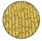
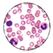
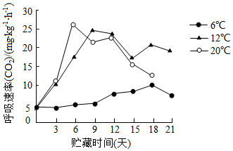

2020年北京市中考生物试题 · 选择题 第1、2、3、4、5题
1．（1分）同学们用普通光学显微镜观察下列几种细胞，其中没有细胞壁的是（ ）
A．

B．
C．D．2．（1分）发面过程常需要添加酵母菌。下列关于酵母菌的叙述错误的是（ ）
A．是由一个细胞构成的生物体
B．气体交换要通过细胞膜进行
C．可通过出芽生殖产生新个体
D．可在叶绿体中合成有机物
3．（1分）小林同学用绿豆种子做材料，进行发豆芽的生物实践活动。下列叙述错误的是（ ）
A．容器中需要放入适量的水
B．发豆芽过程需要适宜的温度
C．为绿豆种子萌发提供营养的结构是子叶
D．绿豆种子萌发最先突破种皮的结构是胚芽
4．（1分）关于蒸腾作用对植物自身和生物圈的作用，下列叙述不合理的是（ ）
A．增加大气中氧气含量B．增加周围环境湿度
C．促进水和无机盐运输D．降低叶片表面温度
5．（1分）京白梨是唯一冠以“京”字的北京特色果品。果实采收后放置一段时间会出现呼吸高峰，这是果实成熟的标志。图示为不同温度条件下果实呼吸速率与贮藏时间的关系，下列叙述错误的是（ ）

A．果实的呼吸作用主要在线粒体中进行
B．呼吸作用会消耗果实中的有机物
C．12℃条件下贮藏的果实最先成熟
D．6℃条件有利于果实贮藏